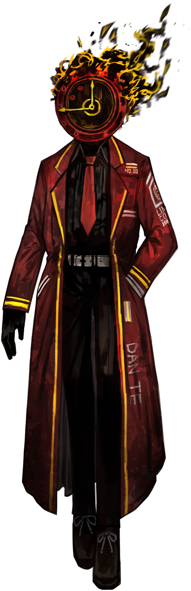
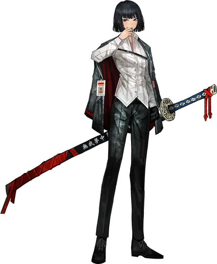
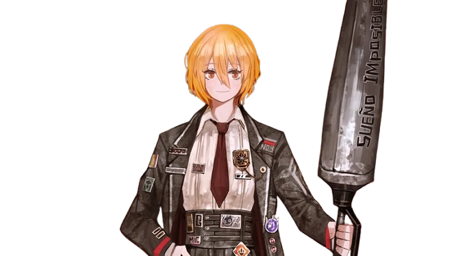

Esta es una página con algunos personajes del juego Limbus Company

Dante (Hangul: 단테, Dante) es designado Pecador #10 y Gerente Ejecutivo del departamento LCB de la Compañía Limbus.
Dante es un gerente bastante realista y atento, con tendencia a hacer bromas.
El juego comienza con él borrando su memoria a propósito y reemplazando su cabeza con un reloj protésico,
solo para ser contactado y reclutado por la Compañía Limbus minutos después.
Dante actúa como el personaje principal siempre presente de la Compañía Limbus,
recorriendo torpemente el viaje infernal de guiar a los Pecadores por sus caminos hacia las Ramas Doradas.

Ryōshū (Hangul: 료슈, ryo-syu; Japanese: 良秀, りょうしゅう, ryōshū) es designado pecador número 4 del departamento LCB de Limbus Company.
Ryōshū es una mujer ingobernable con una fascinación por el arte que la define de forma única, con poca tolerancia hacia lo que la desinteresa o la ofende.
Anteriormente, formó parte de un grupo de figuras poderosas relacionadas con los Cinco Dedos de los Backstreets, conocido como la Casa de las Arañas, antes de unirse a la Compañía Limbus.
Ella es el personaje central del Canto IX: The Unsevering

Don Quijote (Hangul: 돈키호테, Don khihothe), nombre real Sancho, está designado Pecador #3 del departamento LCB de Limbus Company.
Don Quijote es una mujer revoltosa y firme con un fuerte sentido de la justicia.
Ella no quiere nada más que estar afiliada a la Reparadores.
Ella idolatra tanto hasta el punto de la ilusión, habiendo obtenido su propio Número de Identificación de Fixer antes del reclutamiento.
Meursault (Hangul: 뫼르소, Moereusoes) el Pecador N.° 5 del departamento LCB de la Compañía Limbus.
Meursault es un hombre reservado y complaciente. Desea que se le comunique con claridad.
Anteriormente estuvo afiliado a N Corp.
No llegó a formarse una opinión sobre sus ideales antes de unirse a Limbus Company.